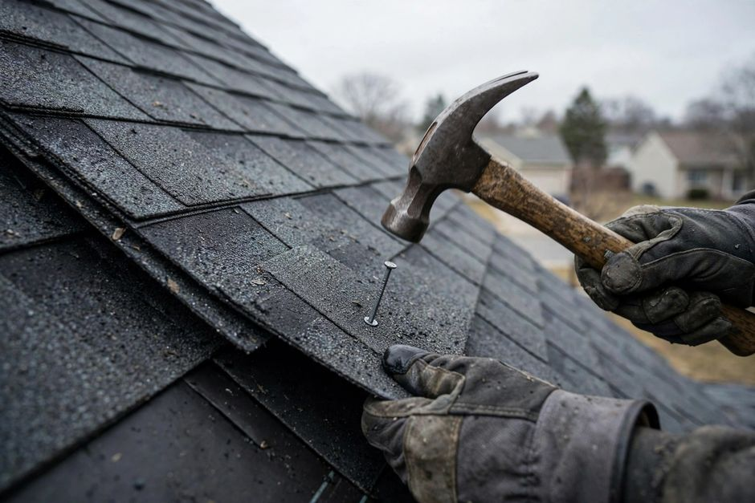

Written estimate before work
Pricing comes from a written on-site estimate, not from a figure on this site. The published guides quoted in the blog disagree with each other, which is why no price is presented here as this business’s price.
WP Exterior Inc is a roofing contractor based at 638 Birchwood Ave, Des Plaines, IL 60018. This page sets out the facts that can be checked: the address, the listed hours, the Google rating, and the scope of this site.
Google rating5.0 from 14 Google reviews
Des Plaines address638 Birchwood Ave, Des Plaines, IL
Listed hoursMon–Sat, closed Sunday
Phone(224) 802-4866

WP Exterior Inc is a roofing contractor based at 638 Birchwood Ave, Des Plaines, IL 60018. Its listed hours are Monday and Tuesday 7:30 AM–7:00 PM, Wednesday to Friday 7:30 AM–7:30 PM, and Saturday 8:30 AM–5:00 PM, closed Sunday. The phone number is (224) 802-4866.
On Google, WP Exterior Inc holds a 5.0 rating from 14 reviews, all five-star. This site makes no license, warranty, brand, insurance-outcome, or response-time claims. The pages on this site describe roofing topics for Des Plaines homes; call during listed hours to confirm scope and terms for a particular roof.
Des Plaines context: most homes here were built before 1980 (median year built 1966, ACS 2019–2023), and the climate record at Chicago O’Hare (1991–2020 normals) shows 38.4 inches of snowfall a year with about 121 freezing nights — the freeze–thaw pattern behind much of the ice-dam and flashing trouble described in the guides.
A roof decision starts with questions: what is wrong, what the options are, and what the work involves. The facts on this site that can be checked are the address, the listed hours, and the Google reviews. Scope and price are for a phone conversation and a written estimate.
Pricing comes from a written on-site estimate, not from a figure on this site. The published guides quoted in the blog disagree with each other, which is why no price is presented here as this business’s price.
Most Des Plaines homes were built before 1980, with a median year built of 1966 (ACS 2019–2023). Freeze–thaw winters, snow, and summer storms shape what goes wrong — and what an inspection looks for.
Call during listed hours to confirm scope, terms, and availability for your roof. No license, warranty, brand, insurance-outcome, or response-time claim is made anywhere on this site.
“I use WP Exteriors to repaint my roof and do as some tuckpointing on the exterior of my building. Pat and his team were very professional and communicative. They did a good job explaining what needs to be done to my home immediately and what I can plan for in the future. I will definitely be using them in the future.”
Patricia MurrayGoogle review · 2 months ago
“I recently had the pleasure of working with WP Exterior for my roofing needs, and I must say, I couldn't be more satisfied with the outcome. From the moment I contacted them, it was evident that they truly value their customers. …”
Filip LiberaGoogle review · 2 years ago · Verbatim excerpt
“Patryk was great to work with and extremely professional. I highly recommend WP exteriors and plan on using them again in the future!”
Brian Avila GaonaGoogle review · 5 months ago · Roof inspection
WP Exterior Inc is based at 638 Birchwood Ave, Des Plaines, IL 60018. Call (224) 802-4866 during listed hours to discuss your roof.
Call (224) 802-4866 →Call (224) 802-4866 during listed hours to discuss your roof. WP Exterior Inc is based at 638 Birchwood Ave, Des Plaines, IL 60018. There is no contact form and no email address for this business on this site — the phone is the contact channel.